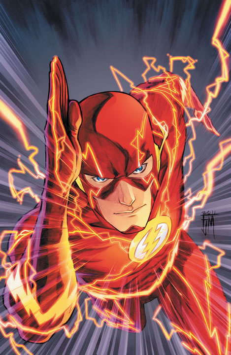

Sou uma pessoa calma e tranquila, que gosta de jogos, filmes e séries
Não gosto de momentos tristes ou depressivos, mas de resto, sou uma pessoa feliz e animada que aprecia as pequenas coisas
nasci em Teofilo Otoni em 2008 no dia 3 de Janeiro,
meus principais interesses sao em, cultura geek, jogos, series e filmes de ficção

| Dia | Manhã | Tarde | Noite |
|---|---|---|---|
| Domingo | Igreja (Escola biblica) | Almoço na casa da minha Vó | Igreja (culto da Familia) |
| Segunda | Tempo Livre/Estudo | Trabalho (Sest Senat) | Faculdade |
| Terça | Tempo livre/Estudo | Trabalho (Sest Senat) | Faculdade |
| Quarta | Tarefas Caseiras / Tempo livre / Estudo | Trabalho (Gontijo) | Faculdade |
| Quinta | Tarefas caseiras / Tempo Livre / Estudo | Trabalho (Gontijo) | Faculdade |
| Sexta | Tempo Livre / Estudo | Trabalho (Gontijo) | Tempo Livre / Revisão |
| Sábado | Tarefas Caseiras | Descanso / Tempo Livre | Tempo Livre |